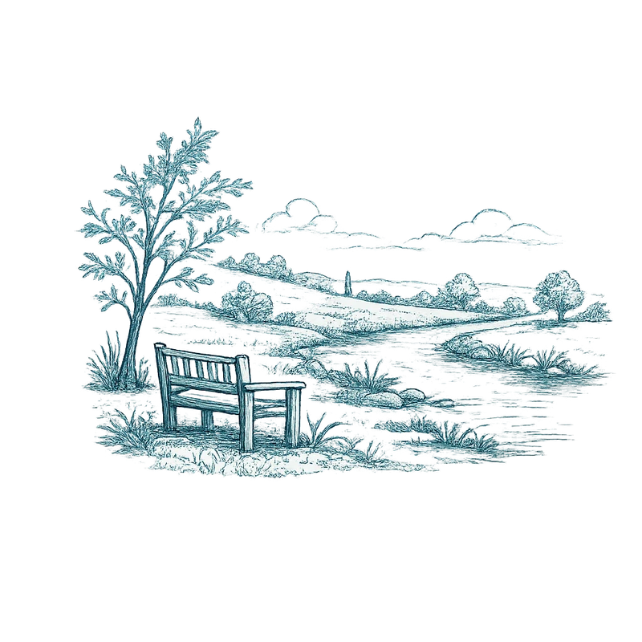
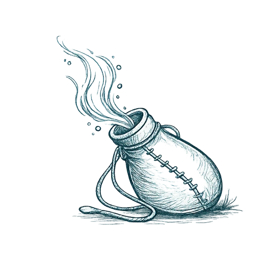
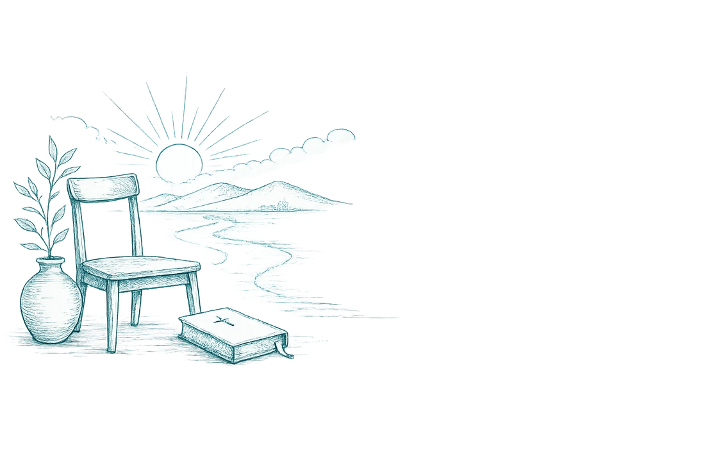

Still waters
Our annual Prayer, Fasting & Renewal Retreat
“Be Still, and Know” – Psalm 46:10
Register HereStill Waters returns in November 2026 for the winter edition.
- Thursday 26 – Saturday 28 November 2026
- Residential countryside retreat
- For adults aged 18 and over
About The Retreat
Still Waters is an annual prayer retreat created to offer space away from the noise and pace of everyday life, allowing participants to rest, reflect, and draw closer to God in a peaceful natural environment.
This retreat is intentionally shaped around prayer, fasting, Scripture, silence, and nature, providing time to be still before God both individually and together.
It is designed for those seeking spiritual renewal, clarity, and deeper intimacy with God, whether you are well-established in faith or simply longing for quiet space to reconnect.
Retreat Rythm
Over the course of three days, the retreat will include:
- Corporate prayer and worship
- Bible reading and guided devotional moments
- Quiet personal prayer and reflection
- Extended quiet time
- Individual or paired prayer walks in nature
- Communal evening meals to break the fast. There will be a gentle rhythm to each day, with space to rest, listen, and respond to God without pressure.
Silence will be encouraged at certain times, but never forced.
Fasting
Participants are encouraged to begin fasting on the morning of Thursday 26 November, before travelling to the retreat.
The fast will be broken together each evening with a communal dinner. Breakfast and lunch will not be provided.
The majority of participants are encouraged to fast, however we recognise that fasting is not suitable for everyone. Participants who need to adapt their fast, or not fast at all, for health or personal reasons are fully supported.
Further guidance will be shared closer to the retreat date.
Location & Accommodation
The retreat will take place at a Christian retreat house in the countryside, offering:
- Extensive gardens and natural surroundings
- Woodland and riverside walks
- Chapel and quiet prayer spaces
- Shared accommodation (maximum 2 people per room)
- A small number of single rooms (subject to availability)
The venue provides a peaceful, prayerful environment well suited to silence, reflection, and spiritual rest.
Dates & Arrival
Dates: Thursday 26 – Saturday 28 November 2026
- Arrival: Thursday afternoon
- Departure: Saturday early afternoon
Full arrival details will be shared with confirmed participants.
Cost & Payment Terms
£165 per person (all-inclusive)
This covers:
- Two nights’ accommodation (shared rooms, 2 people max)
- Dinner on Thursday and Friday evenings ( breakfast & Lunch for non-fasting individuals)
- Use of all retreat facilities
- Retreat coordination and facilitation
Group transport by minibus to and from the retreat venue.
Single rooms may be available at an additional cost, depending on availability.
To secure your place, a 30% deposit (£50) is required following sign-up.
The remaining balance will be paid in instalments, with the final payment due two weeks before the retreat.
Full payment details will be shared by email once you have completed the sign-up form.
Is This Retreat for Me?
This retreat may be right for you if you:
- Long for quiet time with God
- Are open to prayer, fasting, and reflection
- Value being in nature
- Are seeking spiritual renewal
- Are comfortable in a small group setting
You do not need to have attended an Inside Out gathering before — all are welcome.
As our retreats are intentionally kept small, priority is given to those who have not yet attended Still Waters that year. Previous attendees are welcome to join the waiting list should spaces become available or register for 2027 spring.

MOMENTS FROM STILL WATERS
Over a few days, we step away from the noise, slow down, with phones away and make space for God.
No pressure. No performance. Just presence.
Below are a few moments from our April Still Waters retreat.
Looking Ahead

New Wine 2027
The 2027 edition of Still Waters will carry the theme New Wine — centred on renewal, surrender, and making room for what God desires to pour out in a new season.
You can now register your interest for Still Waters 2027.

Reset day 2027
Reset Day is a one-day retreat created for those needing space to pause, reflect, pray, and begin the year from a place of stillness rather than pressure.
The day will include quiet reflection, prayer, Scripture, guided stillness, personal reflection time, and community.
“But Jesus often withdrew to lonely places and prayed”
Luke 5:16